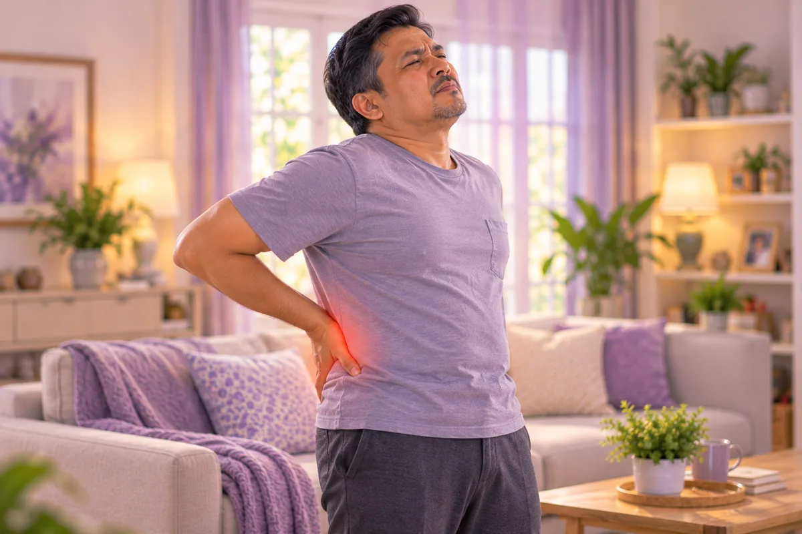

腰肌劳损
也称慢性腰部劳损、腰部肌肉疲劳
这是什么
腰部肌肉因过度使用或姿势不良而出现的长期酸痛、紧绷。
- 腰部
- 上班族常见
- 酸痛紧绷
- 就诊科室
- 家庭医生、骨科（脊柱外科）、康复科
- 多发人群
- 久坐的上班族、司机和需要搬抬的人
- 传染性
- 不传染
- 病程
- 长期，随活动时轻时重
医学详情
腰部发生了什么
腰部（腰椎）有五节椎骨（L1至L5），由椎间盘、关节、韧带和多层肌肉连接并支撑。沿脊柱和核心周围的肌肉整天都在支撑上半身。当这些肌肉反复过度负荷，或长时间保持同一姿势时，肌肉和周围的薄层筋膜会出现局部紧绷、压痛，微小的劳损不断累积。疼痛通常是遍及腰部的钝痛，轻柔活动和温热后会减轻。影像检查常常是正常的：这是肌肉和软组织的问题，而不是骨头或椎间盘受损。
常见类型
- 急性： 突然的过度负荷，如搬重物或扭转；通常几天到几周内缓解
- 慢性： 反复或持续的过度负荷；酸痛超过约3个月，随活动时轻时重
- 触发点： 肌肉中紧绷、压痛的结节，可把酸痛牵涉到臀部或髋部
预后
大多数腰肌劳损会随时间、保持活动、良好姿势和肌力训练而改善。长时间卧床休息反而容易加重。如果引起问题的习惯不变，它可能再次出现。治疗方案由医生决定。
常见表现

腰痛腰痛 
早晨背部僵硬晨僵 
弯腰、提物困难腰部活动受限 
髋部疼痛髋部疼痛
医学详情
症状详解
- 钝痛： 遍及腰部的深层酸痛，有时一侧更明显；常在傍晚或长时间坐、站、弯腰后加重
- 僵硬： 早晨或久坐后腰部发僵，活动开以后会松开
- 压痛点： 脊柱两旁的肌肉按压时疼痛，有些人能摸到紧绷的结节
- 弯腰受限： 弯腰或扭转因紧绷和不适而受限
- 单纯肌肉劳损不常见： 腿部发麻、无力，或疼痛放射到膝盖以下。这些需要医生检查
为什么会这样

搬重物姿势不对不当搬抬（腰部屈曲负荷） 
久坐不动久坐 
瘫坐着用电脑不良姿势 
单侧提重物不对称负重 
年龄增长年龄相关的椎间盘退变 
长时间开车久坐与震动
医学详情
病因和危险因素
共同点是肌肉“扛不住”的负荷：太重（搬抬、扭转）、太久（连续几小时坐或站）或肌力太弱（缺乏运动，核心和腰背肌肉容易疲劳）。不良姿势会让同样的几块肌肉反复承担负荷。
- 搬抬和扭转： 尤其是弓着背或重物离身体较远时
- 久坐或久站： 伏案工作、开车，或工作时久站不休息
- 核心和腰背肌力弱： 缺乏运动，肌肉容易提早疲劳
- 不良姿势： 瘫坐，或坐姿、睡姿让腰背受力
- 体重偏高、吸烟、压力和睡眠差： 研究显示与更多腰痛有关
出现这些情况请先看医生
- 跌倒、意外或重击后的腰痛
- 腰痛伴发烧或不明原因体重下降
- 腿部发麻、刺痛或无力
- 大小便失控，或会阴部发麻：立即去医院
- 夜里痛醒，或躺下也不缓解的剧烈疼痛
- 几周后仍不缓解
如果有以上情况，请先看医生，再来做调理。
请继续按医嘱服药，并按时复诊。我们的调理是温和的辅助，不能代替医疗。
医学详情
医生如何检查
没有疼痛的人在影像上也常见椎间盘退变等改变，所以结果必须结合你的症状一起判断。
- 病史和体格检查： 哪里痛、什么时候痛、什么让它好转或加重、你的工作和活动；医生会检查姿势、脊柱活动、肌肉紧张度、腿部肌力、反射和感觉
- 神经检查： 如直腿抬高试验；用来区分肌肉疼痛和神经问题
- X光、磁共振或CT： 一般的肌肉劳损大多不需要；出现警示症状、神经症状或疼痛不改善时才使用
- 血液或尿液检查： 仅在怀疑感染或炎症性疾病时进行
症状相似的其他问题
椎间盘突出、脊柱退变、肾脏或泌尿系感染，以及髋关节或骶髂关节的问题都可能引起腰痛，所以需要由医生来鉴别。腰痛伴发烧、胸痛或突发剧烈腹痛需要紧急就医：请拨打999。
日常护理

锻炼核心肌群核心稳定训练 
每天散步低冲击有氧运动 
轻柔拉伸腰背腰部活动度训练 
有腰靠的椅子腰部支撑 
腰部热敷浅表热敷 
用腿发力搬物安全搬抬方法
医学详情
日常护理详解
- 保持活动： 轻柔的散步和正常的日常活动比长时间卧床更有帮助；从少量开始，逐步增加
- 增强肌力： 每周几次核心和腰背锻炼，循序渐进；如果引起尖锐疼痛就停止
- 轻柔拉伸： 腘绳肌、髋部和腰部，保持不弹震，每天几次
- 坐姿良好： 双脚平放，腰部曲线处垫一个小靠垫，每30到45分钟起身活动一下
- 安全搬抬： 屈膝，让重物靠近身体，搬抬时避免扭转
- 温热和睡眠： 热敷可缓解紧绷的肌肉；侧睡时两膝之间夹一个枕头，或仰睡时膝下垫枕头
- 体重、吸烟和压力： 健康的体重、不吸烟和管理压力都对腰背有帮助
告诉理疗师
- 腿或脚发麻刺痛
- 最近腰背部受伤或手术
- 骨质疏松
- 心脏起搏器或金属植入物
- 怀孕
- 服用抗凝药
调理师会在开始前和你确认这一项。
常见问题
腰肌劳损是什么？
也称慢性腰部劳损、腰部肌肉疲劳。腰部肌肉因过度使用或姿势不良而出现的长期酸痛、紧绷。
腰肌劳损有哪些常见表现？
腰痛；早晨背部僵硬；弯腰、提物困难；髋部疼痛
为什么会有腰肌劳损？
搬重物姿势不对；久坐不动；瘫坐着用电脑；单侧提重物；年龄增长；长时间开车
有腰肌劳损要怎么照顾自己？
锻炼核心肌群；每天散步；轻柔拉伸腰背；有腰靠的椅子；腰部热敷；用腿发力搬物
AI Body Master 的调理对腰肌劳损有帮助吗？
调理是温和的无针经络养生辅助，不能治疗或治愈腰肌劳损，也不能代替药物或医生。开始前请告诉理疗师。
相关疾病
参考资料: Mayo Clinic: Back pain; NHS: Back pain; Cleveland Clinic: Low back pain; NCBI StatPearls: Low Back Pain
页面更新: 2026-11-01